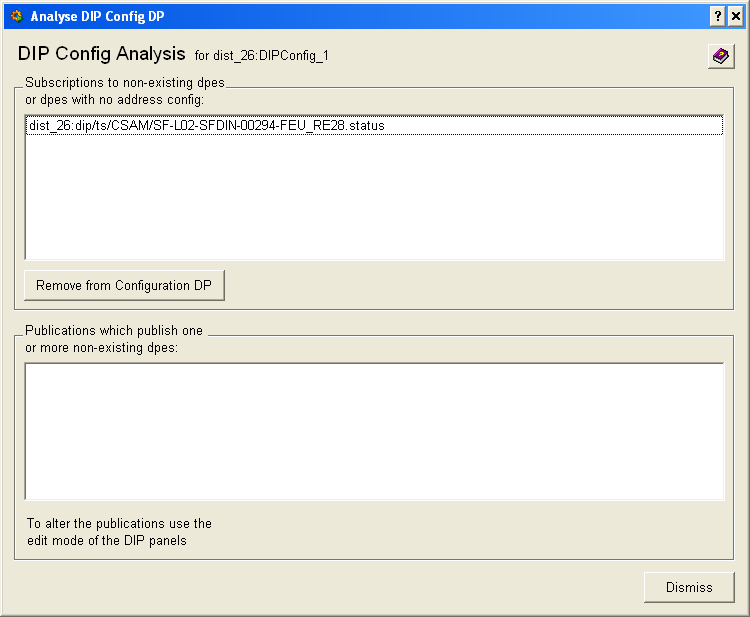

| Panel Name |
fwDipAnalyseConfigpnl |
|
| Introduction |
This panel is used to inspect the DIP config files for entries that might be invalid | |
| Instructions | For subscriptions - it will list all the dpe entries contained in client config that do not exists and all dpe in the client config that do not have address configs (implying a faulty subscription). One will have possibility of removing that entries in case they are found. For publications - one will be presented with a list of publications that publish one or more non-existing datapoint elements. In order to fix the problem one should go to Edit panels of the DIP and edit the publications. |
|
| Restrictions | ||
|

|
| Dollar Parameters | ||
| Name | Description | |
| $sConfig | DIP config datapoint to analyse | |